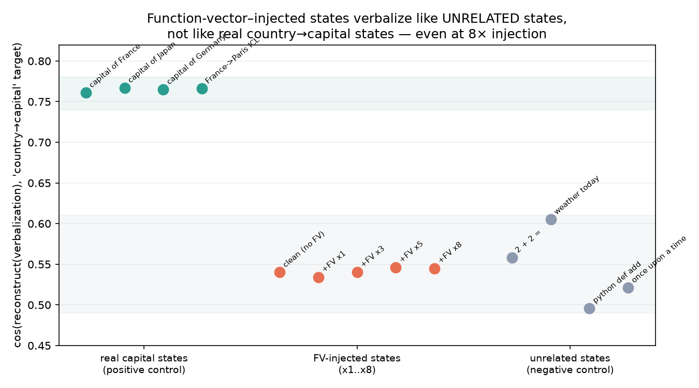

Function vectors don’t make it through natural-language autoencoders
I was interested whether we could see the effect of function vectors on NLA verbalizations. Looks like we can’t.
The one-sentence version
I tried to read what a function vector “means” by feeding it through a natural-language autoencoder — a tool that turns a model’s internal activations into English. It doesn’t work. And the way it fails is the interesting part: the exact same function vector that provably steers the model’s behavior leaves no trace in the language readout of the state it produces. Steering and verbalizability come apart.
This came out of a ~1-day pilot for a bigger idea that the pilot then killed. Writing it up because the negative is clean and the dissociation is easy to assume away.
What I was thinking
I was interested in seeing whether NLAs could be used to understand function vectors, with the potentially broader goal of using NLAs to enable the creation of more general FVs than currently exist in the literature — which are limited to fairly concrete, mechanical operations, with not much in the way of higher-level FVs. But after applying an FV, neither the NLA verbalization nor the AR re-embedding preserved the effect of the FV.
The two tools, briefly
Function vectors (FVs) [Todd et al., 2023]. Give a model a few in-context examples of a task — France→Paris, Japan→Tokyo, ... — and it forms a compact internal representation of “the task.” You can pull this out as a single vector (a sum of the outputs of the attention heads that carry the task) and inject it into a fresh, example-free pass to make the model do the task with no demonstrations. FVs are a write interface: a handle you add to the residual stream to make the model do something.
Natural-language autoencoders (NLAs) [Anthropic / Transformer Circuits, 2026]. A pair of fine-tuned models. The verbalizer takes an activation and writes an English description of what it represents; the reconstructor goes back from English to a vector. NLAs are a read interface.
The idea I was chasing: FVs write, NLAs read — so point the reader at the writer and get legible, nameable task primitives. Extract an FV, verbalize it, and it should describe its task. The first thing to check is the most basic link: does an FV verbalize as its task at all?
Setup (the short version)
Qwen2.5-7B-Instruct on a laptop, forward-pass only, no training. The NLA is Anthropic’s released Qwen checkpoint pair that reads/writes the layer-20 residual stream. The function vector is for the country→capital task, extracted with Todd et al.’s method. To avoid eyeballing paragraphs, I score a verbalization by reconstructing it back to a vector and measuring cosine similarity to a “country→capital” target vector — higher means the verbalization’s meaning is nearer “country→capital.” (The reconstructor is itself lossy, so this metric isn’t ground truth — which is why the controls below matter.)
Step 1: the FV steers (the write side works)
Add the country→capital FV at layer 17 of a zero-shot Q: <country>\nA: prompt and look at the next token:
Q: France\nA:→ “Paris” enters the top-3 (9.1%) only with the FV, absent from the clean run.Q: Japan\nA:→ “Tokyo” enters the top-3 (5.5%) only with the FV.
Modest — this is 7B zero-shot, not the ideal in-context setup — but unambiguous. The write side works.
Step 2: the FV does not verbalize (the read side fails)
Two ways to read it, both fail:
(a) Verbalize the raw FV. Feed it straight to the verbalizer → incoherent stuff about “structured math / TensorFlow / the number 15.” No geography. Unsurprising in hindsight: a raw FV is a sum of head outputs, not a state the model actually occupies, so it’s off-distribution for a verbalizer trained on real activations.
(b) Verbalize the FV’s effect. The principled version: add the FV during a forward pass and verbalize the actual layer-20 state it produces (a real, on-distribution activation, just nudged). At first this looked like it worked — the FV-steered Q: France\nA: verbalized as “…what is the capital of…trivia about a country…”.
But that was prompt leakage — the prompt already said “France.” Redo it on neutral prompts with no geography ("The answer is", "I think that", "It is") and the country/capital signal vanishes. With and without the FV, the verbalizations are basically identical, and neither mentions countries or capitals.
Step 3: making the negative airtight
A null only means something if the instrument can detect a true positive and you pushed the intervention hard enough. Two controls:
- Positive control: score real country→capital states (the layer-20 activation at the answer position of “The capital of France is”) vs. clearly-unrelated states (
2+2=, python code, “once upon a time”). - Strong injection: re-run (b) at injection strengths ×1, ×3, ×5, ×8. At ×8 the state is heavily perturbed (cosine to clean drops to 0.62), so this is not a timid nudge.
Everything on one axis:

- Real capital states: ~0.76. The metric lights up; the verbalizer even describes them as “a famous city in Japan… what is the capital of…”. The instrument is not blind.
- Unrelated states: ~0.55.
- FV-injected states: ~0.54, flat from ×1 to ×8. They sit in the unrelated band and never move toward the capital band, even when the injection nearly breaks the state.
So the null in Step 2 is real — not a dead metric, not a too-gentle nudge.
The finding: steering ≠ verbalizability
The same function vector that provably changes the model’s behavior (makes it say “Paris”/“Tokyo”) produces no detectable change in the natural-language readout of the resulting state — while a genuine country/capital context reads out loud and clear.
In other words: function vectors act on the model’s predictive machinery without altering the gist that a natural-language autoencoder reads. Behavioral effect and verbalizable content are separable properties of an activation.
A little counterintuitive if you started (like I did) from “FVs write, NLAs read, so NLAs should read what FVs write.” They operate at different granularities. The verbalizer describes the dominant content of a state; an FV is a directional nudge that reshapes the next-token distribution without necessarily changing what the state is mostly “about.” The reader and the writer aren’t looking at the same thing.
Why I’m stopping here (and what it opens)
The idea this pilot was testing — a legible read/write loop over task primitives — needs the reader to see what the writer wrote. It can’t, at least not with these two tools used this way. So that idea’s out.
But the dissociation suggests a better-posed question, if I (or anyone) wanted to chase it: when can and can’t natural-language readouts detect activation-space interventions? FVs are one point — behavioral steering, invisible to the readout. SAE-feature steering, lower-rank perturbations, interventions at the read layer, other readout methods (patchscopes, probes) — those are all open. Mapping which interventions are legible and which are silent would be a real thing. This is just the first data point.
Caveats
One task, one model, one FV — the dissociation could be task- or model-specific. The metric leans on a lossy reconstructor (the +0.22 positive/negative separation says it’s good enough to trust a null of this size, not that it’s exact). And “verbalizable gist” is my interpretation of what the NLA reads — a different readout might surface the FV, which is exactly the follow-up, not a settled claim.